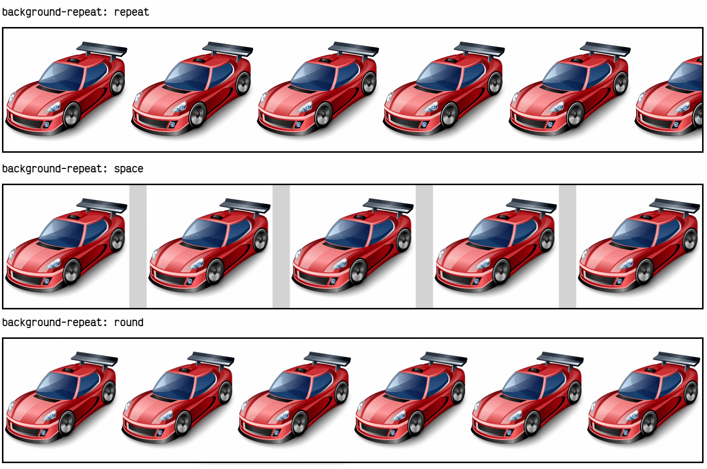

Colores y fondos¶
Colores CSS¶
Uno de los primeros cambios de estilo que podemos pensar realizar en un documento HTML es hacer variaciones en los colores de primer plano y de fondo. Esto es posible con las primeras dos propiedades que veremos a continuación:
| Propiedad | Valor | Significado |
|---|---|---|
color |
color | Cambia el color del texto que está en el interior de un elemento. |
background-color |
color | Cambia el color de fondo de un elemento. |
La propiedad color establece el color del texto, mientras que la propiedad background-color establece el color de fondo del elemento.
Todas las propiedades CSS donde existen valores , establecen la posibilidad de indicar 4 formas alternativas (con algunos derivados) para especificar el color deseado:
| Nombre | Formato | Ejemplo |
|---|---|---|
| Palabra clave predefinida | [palabra clave] | red |
| Esquema RGB | rgb(rojo, verde, azul) | rgb(255, 0, 0) |
| Esquema RGB con canal alfa | rgba(rojo, verde, azul, alfa) | rgba(255, 0, 0, 0.25) |
| Esquema RGB hexadecimal | #RRGGBB | #ff0000 |
| Esquema RGB hexadecimal con canal alfa | #RGBBBAA | #ff000040 |
| Esquema HSL | hsl(color, saturación, brillo) | hsl(0, 100%, 100%) |
| Esquema HSL con canal alfa | hsla(color, saturación, brillo, alfa) | hsla(0, 100%, 100%, 0.25) |
A continuación iremos explicando cada uno de estos formatos para entender como se especifican los colores en CSS y utilizar el método que más se adapte a nuestras necesidades.
Consejo: Si lo que buscamos es un sistema para extraer colores (eye dropper) de una página web, podemos utilizar la extensión para Chrome de ColorZilla o el propio Chrome Developer Tools, que integra dicha funcionalidad.
Palabras clave de color¶
El primer caso (y más limitado) permite establecer el color utilizando palabras reservadas de colores, como red, blue, orange, white, navy, yellow u otras. Existen más de 140 palabras clave para indicar colores:
| Nombre del color | Valor hexadecimal | Valores RGB | Color |
|---|---|---|---|
| Alice azul | # F0F8FF | rgb (240,248,255) |  |
| Blanco antiguo | # FAEBD7 | rgb (250,235,215) |  |
| Agua | # 00FFFF | rgb (0,255,255) |  |
| Aguamarina | # 7FFFD4 | rgb (127,255,212) |  |
| Azur | # F0FFFF | rgb (240,255,255) |  |
| Beige | # F5F5DC | rgb (245,245,220) |  |
| Sopa de mariscos | # FFE4C4 | rgb (255,228,196) |  |
| Negro | # 000000 | rgb (0,0,0) |  |
| BlanchedAlmond | #FFEBCD | rgb (255,235,205) |  |
| Azul | # 0000FF | rgb (0,0,255) |  |
| Violeta Azul | # 8A2BE2 | rgb (138,43,226) |  |
| marrón | # A52A2A | rgb (165,42,42) |  |
| BurlyWood | # DEB887 | rgb (222,184,135) |  |
| CadetBlue | # 5F9EA0 | rgb (95,158,160) |  |
| Monasterio | # 7FFF00 | rgb (127,255,0) |  |
| Chocolate | # D2691E | rgb (210,105,30) |  |
| Coral | # FF7F50 | rgb (255,127,80) |  |
| Aciano Azul | # 6495ED | rgb (100,149,237) |  |
| Seda de maiz | # FFF8DC | rgb (255,248,220) |  |
| carmesí | # DC143C | rgb (220,20,60) |  |
| Cian | # 00FFFF | rgb (0,255,255) |  |
| Azul oscuro | # 00008B | rgb (0,0,139) |  |
| DarkCyan | # 008B8B | rgb (0,139,139) |  |
| DarkGoldenRod | # B8860B | rgb (184,134,11) |  |
| Gris oscuro | # A9A9A9 | rgb (169,169,169) |  |
| Gris oscuro | # A9A9A9 | rgb (169,169,169) |  |
| Verde oscuro | # 006400 | rgb (0,100,0) |  |
| DarkKhaki | # BDB76B | rgb (189,183,107) |  |
| DarkMagenta | # 8B008B | rgb (139,0,139) |  |
| DarkOliveGreen | # 556B2F | rgb (85,107,47) |  |
| Naranja oscuro | # FF8C00 | rgb (255,140,0) |  |
| Orquídea Oscura | # 9932CC | rgb (153,50,204) |  |
| Rojo oscuro | # 8B0000 | rgb (139,0,0) |  |
| Salmón oscuro | # E9967A | rgb (233,150,122) |  |
| DarkSeaGreen | # 8FBC8F | rgb (143,188,143) |  |
| DarkSlateBlue | # 483D8B | rgb (72,61,139) |  |
| DarkSlateGray | # 2F4F4F | rgb (47,79,79) |  |
| DarkSlateGrey | # 2F4F4F | rgb (47,79,79) |  |
| DarkTurquoise | # 00CED1 | rgb (0,206,209) |  |
| Violeta oscuro | # 9400D3 | rgb (148,0,211) |  |
| Rosa profundo | # FF1493 | rgb (255,20,147) |  |
| DeepSkyBlue | # 00BFFF | rgb (0,191,255) |  |
| DimGray | # 696969 | rgb (105,105,105) |  |
| DimGrey | # 696969 | rgb (105,105,105) |  |
| DodgerBlue | # 1E90FF | rgb (30,144,255) |  |
| Ladrillo refractario | # B22222 | rgb (178,34,34) |  |
| FloralWhite | # FFFAF0 | rgb (255,250,240) |  |
| Bosque verde | # 228B22 | rgb (34,139,34) |  |
| Fucsia | # FF00FF | rgb (255,0,255) |  |
| Gainsboro | #DCDCDC | rgb (220,220,220) |  |
| Fantasma blanco | # F8F8FF | rgb (248,248,255) |  |
| Oro | # FFD700 | rgb (255,215,0) |  |
| Vara de oro | # DAA520 | rgb (218,165,32) |  |
| gris | # 808080 | rgb (128,128,128) |  |
| Gris | # 808080 | rgb (128,128,128) |  |
| Verde | # 008000 | rgb (0,128,0) |  |
| Verde amarillo | # ADFF2F | rgb (173,255,47) |  |
| Gotas de miel | # F0FFF0 | rgb (240,255,240) |  |
| Rosa caliente | # FF69B4 | rgb (255,105,180) |  |
| IndianRed | # CD5C5C | rgb (205,92,92) |  |
| Índigo | # 4B0082 | rgb (75,0,130) |  |
| Marfil | # FFFFF0 | rgb (255,255,240) |  |
| Caqui | # F0E68C | rgb (240,230,140) |  |
| Lavanda | # E6E6FA | rgb (230,230,250) |  |
| LavenderBlush | # FFF0F5 | rgb (255,240,245) |  |
| Césped verde | # 7CFC00 | rgb (124,252,0) |  |
| Limón chiffon | #FFFACD | rgb (255,250,205) |  |
| Azul claro | # ADD8E6 | rgb (173,216,230) |  |
| LightCoral | # F08080 | rgb (240,128,128) |  |
| Cian claro | # E0FFFF | rgb (224,255,255) |  |
| LightGoldenRodYellow | # FAFAD2 | rgb (250,250,210) |  |
| Gris claro | # D3D3D3 | rgb (211,211,211) |  |
| Gris claro | # D3D3D3 | rgb (211,211,211) |  |
| Verde claro | # 90EE90 | rgb (144,238,144) |  |
| Rosa claro | # FFB6C1 | rgb (255,182,193) |  |
| Salmón de luz | # FFA07A | rgb (255,160,122) |  |
| LightSeaGreen | # 20B2AA | rgb (32,178,170) |  |
| LightSkyBlue | # 87CEFA | rgb (135,206,250) |  |
| LightSlateGray | # 778899 | rgb (119,136,153) |  |
| LightSlateGrey | # 778899 | rgb (119,136,153) |  |
| LightSteelBlue | # B0C4DE | rgb (176,196,222) |  |
| Amarillo claro | # FFFFE0 | rgb (255,255,224) |  |
| Lima | # 00FF00 | rgb (0,255,0) |  |
| Verde lima | # 32CD32 | rgb (50,205,50) |  |
| Lino | # FAF0E6 | rgb (250,240,230) |  |
| Magenta | # FF00FF | rgb (255,0,255) |  |
| Granate | # 800000 | rgb (128,0,0) |  |
| MedioAquaMarine | # 66CDAA | rgb (102,205,170) |  |
| Azul medio | # 0000CD | rgb (0,0,205) |  |
| MediumOrchid | # BA55D3 | rgb (186,85,211) |  |
| Mediano | # 9370DB | rgb (147,112,219) |  |
| MediumSeaGreen | # 3CB371 | rgb (60,179,113) |  |
| MediumSlateBlue | # 7B68EE | rgb (123,104,238) |  |
| MediumSpringGreen | # 00FA9A | rgb (0,250,154) |  |
| MediumTurquoise | # 48D1CC | rgb (72,209,204) |  |
| MediumVioletRed | # C71585 | rgb (199,21,133) |  |
| MidnightBlue | # 191970 | rgb (25,25,112) |  |
| MintCream | # F5FFFA | rgb (245,255,250) |  |
| MistyRose | # FFE4E1 | rgb (255,228,225) |  |
| Mocasín | # FFE4B5 | rgb (255,228,181) |  |
| Navajoblanco | #FFDEAD | rgb (255,222,173) |  |
| Armada | # 000080 | rgb (0,0,128) |  |
| Antiguo lace | # FDF5E6 | rgb (253,245,230) |  |
| Aceituna | # 808000 | rgb (128,128,0) |  |
| Verde oliva | # 6B8E23 | rgb (107,142,35) |  |
| naranja | # FFA500 | rgb (255,165,0) |  |
| Rojo naranja | # FF4500 | rgb (255,69,0) |  |
| Orquídea | # DA70D6 | rgb (218,112,214) |  |
| PaleGoldenRod | # EEE8AA | rgb (238,232,170) |  |
| Verde pálido | # 98FB98 | rgb (152,251,152) |  |
| PaleTurquoise | #AFEEEE | rgb (175,238,238) |  |
| PaleVioletRed | # DB7093 | rgb (219,112,147) |  |
| PapayaWhip | # FFEFD5 | rgb (255,239,213) |  |
| Peachpuff | # FFDAB9 | rgb (255,218,185) |  |
| Perú | # CD853F | rgb (205,133,63) |  |
| Rosado | # FFC0CB | rgb (255,192,203) |  |
| ciruela | # DDA0DD | rgb (221,160,221) |  |
| Azul pálido | # B0E0E6 | rgb (176,224,230) |  |
| Púrpura | # 800080 | rgb (128,0,128) |  |
| RebeccaPurple | # 663399 | rgb (102,51,153) |  |
| rojo | # FF0000 | rgb (255,0,0) |  |
| RosyBrown | # BC8F8F | rgb (188,143,143) |  |
| Azul real | # 4169E1 | rgb (65,105,225) |  |
| SaddleBrown | # 8B4513 | rgb (139,69,19) |  |
| Salmón | # FA8072 | rgb (250,128,114) |  |
| SandyBrown | # F4A460 | rgb (244,164,96) |  |
| Mar verde | # 2E8B57 | rgb (46,139,87) |  |
| Concha | # FFF5EE | rgb (255,245,238) |  |
| Tierra de siena | # A0522D | rgb (160,82,45) |  |
| Plata | # C0C0C0 | rgb (192,192,192) |  |
| Cielo azul | # 87CEEB | rgb (135,206,235) |  |
| SlateBlue | # 6A5ACD | rgb (106,90,205) |  |
| SlateGray | # 708090 | rgb (112,128,144) |  |
| Pizarra gris | # 708090 | rgb (112,128,144) |  |
| Nieve | #FFAFA | rgb (255,250,250) |  |
| Primavera verde | # 00FF7F | rgb (0,255,127) |  |
| Azul acero | # 4682B4 | rgb (70,130,180) |  |
| Bronceado | # D2B48C | rgb (210,180,140) |  |
| Teal | # 008080 | rgb (0,128,128) |  |
| Cardo | # D8BFD8 | rgb (216,191,216) |  |
| Tomate | # FF6347 | rgb (255,99,71) |  |
| Turquesa | # 40E0D0 | rgb (64,224,208) |  |
| Violeta | # EE82EE | rgb (238,130,238) |  |
| Trigo | # F5DEB3 | rgb (245,222,179) |  |
| Blanco | #FFFFFF | rgb (255,255,255) |  |
| Humo blanco | # F5F5F5 | rgb (245,245,245) |  |
| Amarillo | # FFFF00 | rgb (255,255,0) |  |
| Amarillo verde | # 9ACD32 | rgb (154,205,50) |  |
Además, existen algunos valores especiales que puedes utilizar cuando quieras especificar un color, como colores transparentes o el color actual del texto, muy útil para SVG, por ejemplo:
| Valor | Significado |
|---|---|
| transparent | Establece un color completamente transparente (valor por defecto de background-color) |
| currentColor | Establece el mismo color que se está utilizando para el texto (CSS3 y SVG) |
Veamos algunos ejemplos de palabras clave de color:
div {
background-color: blue;
background-color: transparent;
background-color: lightpink;
background-color: rebeccapurple; /* En honor a Rebeca, la hija de Eric Meyer */
}
Formato RGB¶
Uno de los métodos más conocidos por los diseñadores gráficos es utilizar el formato RGB. Las siglas RGB significan rojo, verde y azul, por lo que cada cifra (del 0 al 255) representa la intensidad de cada componente de color. Como se puede ver en la siguiente imagen, si utilizamos una cantidad (0, 0, 0) de cada canal, obtenemos el color negro. En cambio, si utilizamos una cantidad (255, 0, 0), obtendremos el color rojo.
De esta forma, mezclando las cantidades de cada canal, se puede obtener prácticamente cualquier color. Existen muchos esquemas de colores, pero en diseño web nos interesa particularmente el esquema RGB (junto al HSL).
La mayoría de los editores tienen los denominados ColorPicker, que no son más que un sistema cómodo y rápido para elegir un color a base de clics por una paleta o circulo visual. También podemos hacerlo directamente en buscadores como Duck Duck Go o Google.
Veamos algunos ejemplos de colores en formato RGB:
div {
background-color: rgb(125, 80, 10);
background-color: rgb(0, 0, 34);
color: rgb(255, 255, 0)
}
Formato hexadecimal¶
El formato hexadecimal es el más utilizado por los desarrolladores web, aunque en principio puede parecer algo extraño y complicado, sobre todo si no has oído hablar nunca del sistema hexadecimal (sistema en base 16 en lugar del que utilizamos normalmente, en base 10).
Cada par de letras simboliza el valor del RGB en el sistema de numeración hexadecimal, así pues, el color #FF0000, o sea HEX(FF,00,00), es equivalente al RGB(255,0,0), que es también equivalente al HSL(0, 100%, 100%). Veamos algunos ejemplos para clarificarlo:
| Hexadecimal | Hex. abreviado | Color RGB | Palabra clave |
|---|---|---|---|
| #FF0000 | #F00 | 255,0,0 | red (rojo) |
| #000000 | #000 | 0,0,0 | black (negro) |
| #00FFFF | #0FF | 0, 255, 255 | cyan (azul claro) |
| #9370DB | #97D | 147,112,219 | mediumpurple (lila) |
HailPixel nos proporciona una manera muy sencilla y rápida de seleccionar tonalidades de color en formato hexadecimal con sólo mover el ratón. Por otro lado, en ColorSpire puedes seleccionar el color deseado y observar como varían tanto los valores hexadecimales como los valores RGB o HSL (ver a continuación).
Truco: Como se puede ver en la segunda columna, para ahorrar espacio puedes utilizar el formato hexadecimal abreviado, especificando sólo las primeras tres cifras de cada par. Por ejemplo,
#9933AAcomo#93A. El color abreviado sólo será fiel cuando los pares de cifras sean idénticos (o al menos, aproximados).
Veamos algunos ejemplos del formato hexadecimal (RGB abreviado):
div {
background-color: #512592;
background-color: #000000;
background-color: #451; /* Equivalente a #445511; */
}
Formato HSL¶
Las siglas HSL significan color (o matiz), saturación y brillo. La primera cifra selecciona el matiz de color (una cifra de 0 a 360 grados), seleccionando el color del círculo exterior de la imagen. Por su parte, las dos siguientes, son el porcentaje de saturación y el brillo del color, respectivamente (ambos, porcentajes de 0% a 100%).

Veamos algunos ejemplos del formato HSL:
div {
background-color: hsl(35deg, 0%, 100%);
background-color: hsl(120deg, 25%, 75%);
background-color: hsl(5deg, 20%, 20%);
}
Canales Alfa¶
Es posible que deseemos indicar un color que tenga cierto grado de transparencia, y de esta forma, refleje el contenido, color o imágenes que se encuentren detrás. Hasta ahora solo conocemos la palabra clave transparent, que es un color de transparencia total (totalmente transparente).
Sin embargo, existe la posibilidad de utilizar los denominados canales alfa, que permiten establecer una transparencia parcial en determinados colores. Estos se pueden establecer en cualquier formato, salvo en los colores con palabras clave. Vamos a ver como hacerlo en cada caso:
-
Formato RGB: En lugar de
rgb()indicamosrgba()para establecer que usaremos un canal alfa. Posteriormente, en lugar de establecer 3 parámetros (rojo, verde, azul), añadiremos uno más, que será el canal alfa. Dicho canal alfa será un valor (del 0 al 1 con decimales) o un porcentaje (del 0% al 100%). -
Formato HSL: Prácticamente idéntico al anterior. En lugar de
hsl()indicamoshsla(). Añadimos un nuevo valor como canal alfa (valor o porcentaje). -
Formato Hexadecimal: Es posible indicar (al final) un par adicional que indique el grado de transparencia. Por ejemplo, el color
#FF0000reescrito como#FF000077se trataría de dicho color, con un grado de transparencia casi del 50% (00es 0%,80es 50%,FFes 100%).
Veamos algunos ejemplos de cada caso:
div {
background-color: rgba(0, 0, 0, 0.5);
background-color: rgba(0, 0, 0, 50%);
background-color: hsla(180deg, 50%, 25%, 0.75);
background-color: hsla(180deg, 50%, 25%, 75%);
background-color: #aa44ba80;
}
¡OJO!: El formato de transparencia en formato hexadecimal se encuentra actualmente bien soportado, pero puede no ser compatible en versiones más antiguas u otros navegadores.
Consejo: Una herramienta genial para seleccionar varios colores en nuestros proyectos es Adobe Color CC. Nos permite escoger entre colores análogos, monocromáticos, tríadas, colores complementarios, compuestos o tonos similares. Muy visual e intuitiva. Otra herramienta, más simple pero muy práctica es HSL Picker, donde puedes elegir el color deseado utilizando el formato de colores HSL y pudiendo seleccionar incluso los canales alfa.
Fondos de CSS¶
Es posible que, buscando hacer un diseño más avanzado, en lugar de utilizar un color de fondo quieras utilizar imágenes. Para ello, CSS te proporciona la propiedad background-image, con la cuál puedes indicar imágenes de fondo o, como veremos más adelante, incluso degradados de varios colores.
Imágenes de fondo¶
En el caso de querer utilizar una imagen de fondo, como ya hemos dicho, utilizaremos la propiedad background-image y en el valor, el nombre de la imagen (o la dirección donde está alojada), siempre rodeada del texto url().
| Propiedad | Valor | Significado |
|---|---|---|
background-image |
none | No utiliza ninguna imagen de fondo. |
background-image |
url(imagen.jpg) | Usa la imagen de nombre imagen.jpg como fondo. |
En el caso de que sólo se coloque el nombre de la imagen (por ejemplo, imagen.jpg), el navegador buscará la imagen en la misma carpeta donde está el archivo CSS. Esto es lo que se llama una ruta relativa. En el caso de que se coloque la ruta completa, por ejemplo https://i.emezeta.com/img/logo.png, se accederá a la imagen alojada en esa dirección web. Esto es lo que se llama ruta absoluta.
NOTA: En el caso de que no se encuentre la imagen o el valor de background-image se haya establecido a none, no se utilizará ninguna imagen de fondo, y en su lugar se mostrará el color establecido con background-color.
Una vez establecida una imagen de fondo con background-image, se puede personalizar la forma en la que se mostrará dicha imagen mediante propiedades como background-repeat, background-attachment o background-position, entre otras:
| Propiedad | Valor | Significado |
|---|---|---|
background-repeat |
repeat | Repite la imagen de fondo horizontal y verticalmente. |
| repeat-x | Repite la imagen de fondo sólo horizontalmente (eje x). | |
| repeat-y | Repite la imagen de fondo sólo verticalmente (eje y). | |
| space | Repite la imagen y rellena con espacio los huecos. | |
| round | Repite la imagen y amplia cada repetición para ajustar. | |
| no-repeat | La imagen de fondo no se repite. | |
background-attachment |
scroll | Cuando hacemos scroll la imagen de fondo se desplaza. |
| fixed | Cuando hacemos scroll, la imagen de fondo permanece fija. | |
background-position |
1 parámetro. Desplaza la imagen de fondo al punto (x, 50%). | |
| 2 parámetros. Desplaza la imagen de fondo al punto (x, y). |
La propiedad background-repeat especifica si la imagen se repetirá horizontalmente (repeat-x), si se repetirá verticalmente (repeat-y), si lo hará en ambas direcciones (repeat) o en ninguna (no-repeat). Por defecto, si no se indica nada, esta propiedad está ajustada en repeat.
Existen también dos valores interesantes, space y round, los cuales asumen implícitamente que se repite el fondo. En el caso de que tengamos una imagen de fondo que se repita varias veces en mosaico, space evita que se corte la imagen, introduciendo un espacio entre las repeticiones individuales.
Por su parte, round lo que hace es ajustar la imagen individual, de modo que la expande o contrae para ajustarla al espacio disponible. En ambos casos la repetición de los fondos nunca se mostrará cortada.

Siempre se podrá combinar en cada eje, con valores mixtos, por ejemplo, utilizando background-repeat: space round, lo que aplicará space al eje X y round al eje Y. Si sólo se especifica uno, se aplicará a ambos ejes.
La propiedad background-attachment especificará si la imagen de fondo seguirá el desplazamiento del usuario (scroll, el comportamiento por defecto) o por el contrario, se quedará fijado y no se moverá (fixed), mientras el usuario se desplaza por la página.
Por último, background-position coloca la imagen en la zona especificada por y por . Por defecto, esos valores son 0% 0%, pero pueden especificarse con unidades (porcentajes, píxels, etc...) o mediante palabras clave que representan zonas predefinidas (top, left, right, bottom y center).
Si sólo se especifica un valor, se tomará para el eje x, mientras que el valor del eje Y será automáticamente establecido a center (o 50%).
Atajo clásico: Fondos¶
Es posible establecer todas estas propiedades anteriores en una sola regla de CSS a modo de atajo, y así ahorrar mucho espacio en escribir las propiedades anteriores por separado. Aunque no es estrictamente obligatorio, se aconseja respetar el siguiente orden (acostumbrarse a usar el mismo orden es una buena práctica):
div {
/* background: <color> <image> <repeat> <attachment> <position> */
background: #FFF url(imagen.jpg) repeat-x scroll top left;
}
Y con esto, ya conocemos las ventajas básicas de CSS a través de propiedades tan interesantes como background-color o background-image . Sin embargo, la llegada de CSS3 incorporó novedades muy interesantes en nuestros navegadores, que mediante versiones anteriores a CSS3 no era posible realizar (o era algo bastante complejo).
Opacidad¶
Es posible utilizar la propiedad CSS3 opacity para establecer una transparencia total sobre el elemento indicado. Cuando decimos << transparencia total>> nos referimos a que la transparencia se aplicará al elemento en cuestión y a todos los elementos HTML que estén en su interior.
| Propiedad | Valor | Significado |
|---|---|---|
opacity |
Establece una transparencia (0 = 100% transparente, a 1 = 100% opaco) |
El valor a indicar es un número entre 0 (completamente transparente) y 1 (completamente visible), pudiendo establecer decimales para valores intermedios:
div {
background-color: #FF0000;
color: #FFFFFF;
opacity: 0.5;
}
Como se puede ver en la imagen, esto hará que la capa div (el recuadro rojo) se muestre al 50% de opacidad, con color de texto blanco (en el caso de existir texto) y fondo de color rojo. Si buscamos una transparencia parcial (color de fondo transparente que no afecte al texto) debemos utilizar los valores RGBA o HSLA (canales alfa) en la propiedad background-color:
div {
color: white;
background-color: RGBA(255, 0, 0, 0.5);
}
De este modo, sólo aplicamos la transparencia al color de fondo, mientras que con opacity se aplica a toda la capa en sí, por lo que afecta a todos los elementos que están dentro de la capa.
Fondos múltiples¶
CSS3 ofrece nuevas características a la hora de utilizar imágenes de fondo, como por ejemplo la posibilidad de establecer múltiples imágenes de fondo de forma simultánea:
div {
background-image: url(manz.png), url(fondo2.jpg), url(fondo3.jpg);
background-repeat: no-repeat;
}
De esta forma, se pueden utilizar varias imágenes y superponerlas una sobre la otra, algo especialmente interesante si la primera imagen de fondo está en formato PNG (la cuál soporta transparencias). Al establecer imágenes de fondo múltiples, las propiedades complementarias a los fondos como background-repeat, background-position y otras, pueden actuar de forma personalizada para cada fondo.
Mientras que en el fragmento de código anterior, el navegador le indica a cada una de las tres imágenes que no debe repetirse, en el siguiente fragmento de código veremos que es posible indicar individualmente el comportamiento de cada una, separando por comas:
div {
background-image: url(manz.png), url(fondo2.jpg), url(fondo3.jpg);
background-repeat: no-repeat, repeat-x, repeat;
}
Además, CSS3 también añade nuevas propiedades para especificar como cubrirá la imagen de fondo al elemento en cuestión:
| Propiedad | Valor | Significado |
|---|---|---|
background-clip |
border-box | padding-box |
background-origin |
border-box | padding-box |
La propiedad background-clip establece la forma en la que el color o la imagen de fondo cubrirá el elemento, mientras que la propiedad background-origin intenta posicionar el comienzo de la imagen de fondo, útil con imágenes. La primera utiliza border-box como valor por defecto, mientras que la segunda utiliza padding-box.
Ambas propiedades pueden tomar uno de los siguientes valores:
| Valor | Significado |
|---|---|
padding-box |
La imagen o color de fondo cubrirá la zona del espaciado y contenido. |
border-box |
La imagen o color de fondo cubrirá la zona del borde, espaciado y contenido. |
content-box |
La imagen o color de fondo cubrirá sólo la zona del contenido. |
Consejo: Una buena forma de darse cuenta del funcionamiento de estas propiedades es establecer un borde grueso punteado. Usando
border-boxla imagen de fondo se extenderá en todo el elemento, incluyendo borde, espaciado y contenido. El valorpadding-boxextenderá la imagen de fondo sólo mediante el padding y el contenido, y por último, la propiedadcontent-boxextenderá la imagen de fondo sólo en la zona del contenido.
Tamaño de fondos¶
Una de las últimas incorporaciones a la familia de propiedades de fondos de imagen es la propiedad background-size, la cuál ajusta el tamaño (ancho y alto) de la imagen de fondo, por si deseamos escalarla a un tamaño diferente. Por defecto, una imagen de fondo toma automáticamente el tamaño de la imagen (que podría ser demasiado grande, por ejemplo). Para no tener que modificar la imagen original de forma manual con un editor de imágenes, podemos utilizar esta propiedad y ajustarla a nuestro agrado mediante CSS:
| Propiedad | Valor | Significado |
|---|---|---|
background-size |
1 parámetro. Aplica un de (ancho × auto) a la imagen de fondo. | |
| 2 parámetros. Aplica un de (ancho × alto) a la imagen de fondo. |
Los valores de tamaño que podemos utilizar, son los siguientes:
| Valor | Significado |
|---|---|
| auto | No escala la imagen. Utiliza el tamaño original. Es el valor por defecto. |
| unidad | Indicamos el tamaño específico que queremos usar (píxels o porcentaje, por ej.). |
cover |
Escala el ancho de la imagen de fondo al ancho del elemento. |
contain |
Escala el alto de la imagen de fondo al alto del elemento. |
Los dos últimos valores (cover y contain) sólo pueden utilizarse en el caso de que se especifique un sólo parámetro como valor en la propiedad background-size.
Atajo moderno: Fondos¶
Los navegadores modernos, incluyen una nueva propiedad de atajo background que permite incluir los valores de propiedades CSS3 como background-clip , background-origin o background-size, que fueron incorporados más tarde que los demás. Es por ello, que el orden aconsejado para adquirir buenas prácticas es el siguiente y varía un poco respecto a la otra propiedad de atajo tradicional:
div {
/* background: <color> <position> <size> <repeat> <origin> <clip> <attachment> <image> */
background: #FFF top left cover repeat-x padding-box border-box scroll url(imagen.jpg);
}
Gradientes CSS¶
Otra funcionalidad que se echaba mucho de menos en versiones anteriores de CSS era la de utilizar fondos con gradientes, o lo que es lo mismo, un color inicial que se transforma poco a poco en uno o varios colores sucesivamente. Sin embargo, en versiones anteriores a CSS3 no era posible hacerlo desde código. Por suerte, hoy en día hemos superado esa limitación.
En CSS3 se introducen algunas expresiones relacionadas que harán esta tarea algo muy sencillo, pudiendo utilizarlas fácilmente mediante la propiedad background-image e indicando el tipo de gradiente deseado:
| Propiedad | Función de gradiente | Significado |
|---|---|---|
background-image |
linear-gradient(...) | Define un gradiente lineal, en una dirección específica. |
| radial-gradient(...) | Define un gradiente radial, en forma de círculo o elipse. | |
| conic-gradient(...) | Define un gradiente cónico, desde un punto de vista superior. |
Veamos cada uno de estos gradientes por separado para entender como funcionan.
Gradientes lineales¶
El primer tipo de gradiente es el gradiente lineal, que permite crear fondos degradados que van en una cierta dirección y cambian de un color a otro, dependiendo de la lista de colores indicada por parámetro.
La sintaxis a utilizar debe ser una de las siguientes (es la misma, pero con menor o mayor cantidad opcional de información):
| Valor | Significado |
|---|---|
| linear-gradient(,, ...) | Gradiente básico entre colores. |
| linear-gradient( | ,,, ...) |
| linear-gradient( | ,,, ...) |
El ejemplo más básico de los anteriores es el primero, donde simplemente indicaremos los colores del gradiente (para que se aprecie el degradado, como mínimo deben ser 2 colores):
div {
background-image: linear-gradient(blue, red);
}
Esto dibujará un degradado con los colores indicados en dirección desde arriba hacia abajo, que es la dirección por defecto. Se pueden ir añadiendo más colores al gradiente si se desea, o cambiar la dirección del degradado, como veremos a continuación:
Pero los parámetros que se pueden utilizar son los siguientes:
| Parámetros | Valor |
|---|---|
| Dirección del gradiente lineal (ver valores posibles más adelante). El valor por defecto es to bottom. | |
| Número de ángulos de la dirección del gradiente lineal. Alternativa a la opción anterior. | |
| El primer color del gradiente | |
| El siguiente color del gradiente | |
| De forma opcional, se puede indicar a que altura comienza a cambiar el gradiente. | |
| ... | (Se pueden seguir añadiendo colores) |
Dirección del gradiente¶
En el ejemplo visual anterior, la dirección del gradiente es horizontal (hacia la derecha). El primer ejemplo tiene sólo 2 colores (azul y rojo), mientras que el segundo tiene 3 colores (azul, amarillo y rojo). Ambos tienen como dirección una orientación hacia la derecha:
div {
background-image: linear-gradient(to right, blue, red); /* Primer ejemplo */
background-image: linear-gradient(to right, blue, yellow, red); /* Segundo ejemplo */
}
Como vemos, el primer parámetro utilizado fue to right, que es lo que indica la orientación del gradiente. En este parámetro se puede indicar tanto una palabra clave como un número de grados que represente la dirección:
Para que quede aún más claro, veamos una tabla de equivalencias:
| Dirección | Grados | Significado |
|---|---|---|
| to top | 0 ó 360deg | Gradiente lineal hacia arriba. |
| to top right | 35deg | Gradiente diagonal hacia derecha-arriba. |
| to right | 90deg | Gradiente lineal hacia derecha. |
| to bottom right | 145deg | Gradiente diagonal hacia abajo-derecha. |
| to bottom | 180deg | Gradiente lineal hacia abajo. |
| to bottom left | 215deg | Gradiente diagonal hacia abajo-izquierda. |
| to left | 270deg | Gradiente lineal hacia izquierda. |
| to top left | 325deg | Gradiente diagonal hacia izquierda-arriba. |
Nota: Si utilizas los grados en lugar de las palabras clave puedes usar valores intermedios (por ejemplo, 280deg o 58deg) y ser más preciso con la dirección si lo necesitas.
Colores del gradiente¶
Por defecto, las distancias entre colores se ajustan automáticamente con proporciones equivalentes, salvo que especifiquemos un tamaño (porcentaje o píxeles, por ejemplo) justo después del color en cuestión, que se puede indicar de forma opcional:
div {
background: linear-gradient(to right, blue 50%, red 55%, green 75%);
}
Este tamaño representa el momento en el que el gradiente comienza a cambiar el color, respecto al tamaño del gradiente completo. En este fragmento de código, a diferencia del anterior, nos mostraría un gradiente similar al que vemos a continuación, donde se aprecia que los tamaños o distancias entre colores no son equivalentes, sino que corresponden azul (0-50%), rojo (50%-55%) y verde (55%-75%), el cuál permanece hasta el final al no haber ningún color más:

Gradiente radial¶
Como vimos al principio, a parte de gradientes lineales, también podemos crear otros tipos de gradientes, como por ejemplo, los gradientes radiales, que permite crear degradados con formas circulares. Para ello, sólo tenemos que utilizar la expresión radial-gradient en lugar de linear-gradient:
De la misma forma, también tenemos diferentes modalidades para crear gradientes radiales, desde una muy básica donde le indicamos sólo los colores, hasta otra más avanzada donde le damos forma, tamaño e incluso ubicación:
| Valor | Significado |
|---|---|
| radial-gradient(,, ...) | Gradiente básico entre colores. |
| radial-gradient(forma,,, ...) | Gradiente con forma circular o elíptica. |
| radial-gradient(forma,,, ...) | Gradiente con tamaño o dimensión. |
| radial-gradient(forma at ubicación,,, ...) | Gradiente con colocación inicial. |
| radial-gradient(forma at ubicación,,, ...) | Gradiente con tamaños entre colores. |
Algunos ejemplos aplicando estos parámetros:
div {
background: radial-gradient(gold, red, black);
background: radial-gradient(ellipse, gold 50%, red 55%, black 75%);
background: radial-gradient(circle 200px, gold 50%, red 55%, black 75%);
background: radial-gradient(circle 400px at left, gold 50%, red 55%, black 75%);
}
Donde:
| Parámetros | Valor |
|---|---|
| [forma] | ellipse |
| farthest-corner | |
| [ubicación] | center |
| El primer color del gradiente | |
| El siguiente color del gradiente | |
| De forma opcional, se puede indicar a que altura comienza a cambiar el gradiente. | |
| ... | (Se pueden seguir añadiendo colores) |
En el caso de la forma podemos elegir circle o ellipse, dependiendo de si queremos un gradiente con forma circular o uno con forma de elipse (que se adapta a la forma del elemento). En el caso del tamaño del elipse o círculo, tenemos varias opciones para indicar el tamaño que tendrá nuestro gradiente:
| Valor | Significado |
|---|---|
| farthest-corner | Intenta cubrir hasta la esquina más lejana (expande hacia ambos lados). |
| farthest-side | Intenta cubrir hasta el lado más lejano (expande hacia un sólo lado). |
| closest-corner | Intenta cubrir hasta la esquina más cercana. |
| closest-side | Intenta cubrir hasta el lado más cercano. |
Le da un tamaño específico al gradiente (píxeles, porcentajes, etc...). Sólo usable en circle. |
En el caso de la ubicación, simplemente especificamos la posición en la que queremos que esté colocado el centro del gradiente.
Gradiente cónico¶
Recientemente, se ha incorporado un nuevo tipo de gradiente muy interesante en CSS, visualmente muy similar al gradiente radial, pero tratándose de una visualización de un cono desde un plano superior, incluyendo sus sombras.
| Valor | Significado |
|---|---|
| conic-gradient(,, ...) | Gradiente básico entre colores. |
| conic-gradient(from,,, ...) | Gradiente indicando punto de inicio. |
| conic-gradient(from at ubicación,,, ...) | Gradiente indicando ubicación del inicio. |
Donde:
| Parámetros | Valor |
|---|---|
| from | Ángulo desde donde comienza el gradiente cónico. Por defecto from 0deg. |
| at [ubicación] | center |
| El primer color del gradiente | |
| El siguiente color del gradiente | |
| De forma opcional, se puede indicar a que altura comienza a cambiar el gradiente. | |
| ... | (Se pueden seguir añadiendo colores) |
A continuación podemos ver la diferencia de un gradiente linear-gradient, un radial-gradient y un conic-gradient:
Poco hay que añadir en este tipo de gradiente, ya que funciona muy similar a los anteriores. La única diferencia mencionable es el uso de la palabra clave from antes de indicar los ángulos de dirección, si se requiere.
Gradientes repetitivos¶
Por último, todos los gradientes que hemos visto permiten la posibilidad de añadir el prefijo repeating- para conseguir que el efecto del gradiente, en lugar de adaptarse a la región completa, realice una repetición constantemente. Comprueba los siguientes ejemplos de forma individual:
div {
background: repeating-linear-gradient(blue 10%, yellow 20%, red 30%); /* Ejemplo 1 */
background: repeating-radial-gradient(blue 10%, yellow 20%, red 30%); /* Ejemplo 2 */
background: repeating-conic-gradient(blue 10%, yellow 20%, red 30%); /* Ejemplo 3 */
}
Es importante que al usar el prefijo repeating- se especifiquen tamaños a los colores, puesto que se necesita saber cuando comenzará a repetirse. En los ejemplos anteriores, los colores seguirían el patrón hasta el último color y volverían a repetirse sucesivamente, de forma que tendríamos:
- Primera repetición: blue 10%, yellow 20%, red 30%
- Segunda repetición: blue 40%, yellow 50%, red 60%
- Tercera repetición: blue 70%, yellow 80%, red 90%
- Cuarta repetición: blue 100%
Fuente: Lenguaje de CSS por Manz